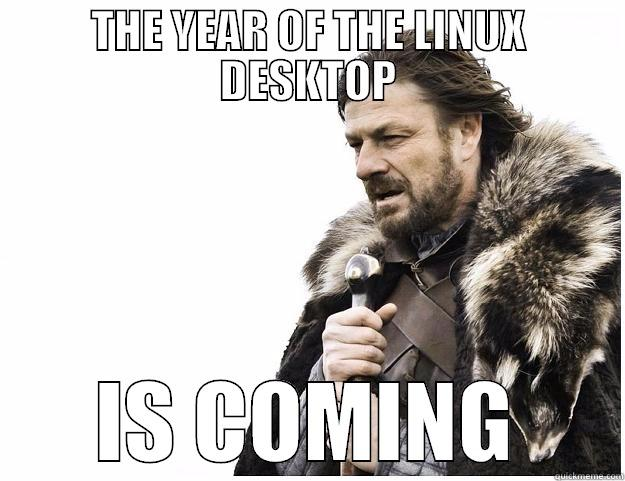
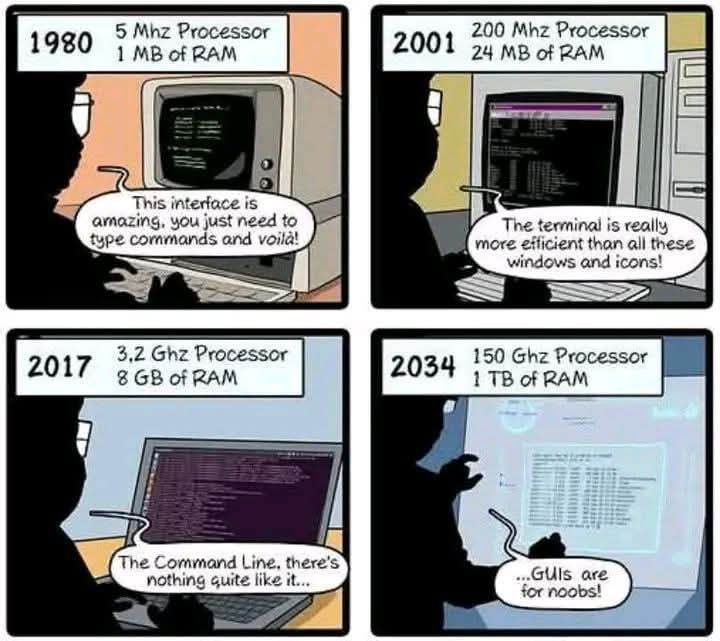

0. Linux for Ops: intro
HOGENT toegepaste informatica
Andy Van Maele, Bert Van Vreckem
2025-2026
Lectoren
- Andy Van Maele (vaktitularis, Gent, TIAO)
- Bert Van Vreckem (Gent, Aalst)
Studiemethode
- 3 lesuur / week
- 4 studiepunten
- equivalente hoeveelheid voor- en nawerk thuis
Linux flavour
- Debian or Red Hat?
- Debian 13 als GUI-Linux VM
- Download ova file
- zowel amd64 als arm
- import & get started
- Later: AlmaLinux (zonder GUI, RedHat style)
Linux is overal
… en je kan er gewoon niet meer omheen
- Linux is hét server-OS
- Grootste websites draaien op Linux
- Ruim aanbod bij cloud-providers
- MacOS X
- Ook UNIX (BSD)
- Bash-shell + commando’s
- Desktop-systeem voor power users en it-professionals
- i.h.b. webdevs, security experts, ops

- Moderne tools voor software release management
- Continuous Integration/Delivery
- Docker
- Embedded systemen
- Arduino, Raspberry Pi, …
- Multimedia-apparatuur, TV’s, NAS, …
Ik wil me specialiseren in Windows. Linux interesseert mij niet
Ook in de Windows-wereld
Microsoft loves Linux!
- Linux Kernel Project contributor
- Azure cloud platform draait >50% Linux VMs
- Windows Subsystem for Linux (WSL/WSL2)
The ’70’s called, they want their terminal back!

De kracht van de CLI
- Command line interface (CLI) is de sleutel tot
automatisering
- 100/1000/… servers/VMs beheren gaat niet via GUI
- Ook in Windows ziet men dit in (PowerShell)!
- CLI Instructies zijn bondiger en makkelijker
reproduceerbaar dan GUI instructies
- én te combineren in een script!
Van een sysadmin wordt zelfstandigheid verwacht
De werkwijze in deze cursus is een eerste stap in die richting!